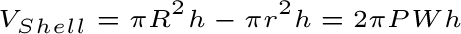

The shell method is a way to find volumes of solids obtained by rotating a 2-d area around an axis.
With the shell method, the axis of rotation is parallel to the direction of integration.
The volume of a single shell is

P is the average radius, W is the width, and h is the height.
Therefore, the volume of the entire solid is given by